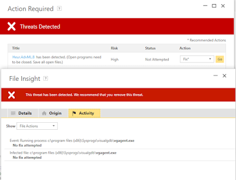
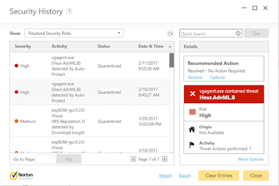

This morning my VisualGDB starting giving me problems with weird error messages about a missing file called vgagent.exe
Rather than fuss with it, I decided might as well re-install - as I noticed there was an incrementally newer version available. So I downloaded VisualGDB-5.2r8-trial.msi (the previous one I downloaded was VisualGDB-5.2r7-trial.msi from January) from the Sysprogs VisualGDB download page.
All installed successfully and I was able to resume my attempts at getting my Segger JTAG to debug the ESP8266 (which I did!)
After taking a break for a few hours, when I returned Norton Anti-virus had popped an alert that it had detected Heur.AdvML.B

and this screen snip of the prior removal of the same-name file just yesterday:

googling Heur.AdvML.B and there appears to be many suspect bait-and-infect links (so be careful when clicking).
There's also a thread on the Norton forum that questions whether these are false positives:
https://community.norton.com/en/forums/heuradvmlb-detected-false-positive-or-not
I've posted this question on the syslogs forum (hopefully it is indeed simply a false positive).
Copyright (c) gojimmypi all rights reserved. Blogger Image Move Cleaned: 5/3/2021 1:35:51 PM